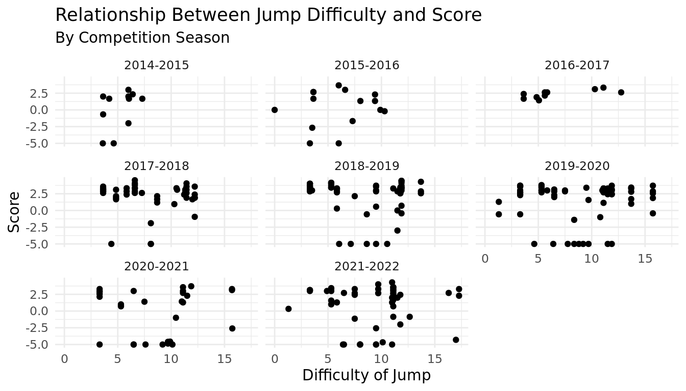

library(tidyverse)
library(tidymodels)
trusova_jump <- read.csv("data/trusova_jumps.csv")Project title
Report
Introduction and Data
INTRODUCTION
Figure skating is a sport in which athletes complete programs full of jumps, spins, and footwork while making sure to perform to their music. Scoring for figure skating consists of two components, the technical score and the artistic score. And it’s this scoring that is the source of much of the controversy in the figure skating world.
In recent years, women’s figure skating has experienced a “quad revolution” of sorts, with female skaters beginning to perform quadruple jumps with a higher frequency. This has been met with many questions, from fans, coaches, and authorities alike. Are quadruple jumps – where the skater rotate four revolutions in the air – valued too heavily? Are they leading to degradation in the performance of other elements?
One of the skaters that helped bring this revolution about is Alexandra Trusova, a Russian figure skater whose national and international competitive career spanned from 2014 to 2022. She was the first to perform several types of quadruple jumps in competition, and her earlier competitive years are well documented. Thus, she is a prime subject for analysis.
THE DATA
Our data is collected from the competition records of the International Skating Union, Tallinn Trophy, and the Russian Skating Federation. The International Skating Union (ISU) is the governing body of figure skating competition around the world. ISU-sanctioned and many other competitions have websites containing records of the detailed results of the competition. Each event has an attached pdf file, recording every skater’s detailed scoring breakdown, including the judges’ evaluation of their jumps. After obtaining Alexandra Trusova’s competitive history, the corresponding data for each of her jumps completed in national championships or international competition was pulled into a dataset, accompanied by relevant data about date and the competition location.
RELEVANT VARIABLES
Table of relevant variables
ETHICAL CONCERNS
Despite her fame within the figure skaitng world, Alexandra Trusova was a minor during the time period this dataset covers. As such, the only data we gathered was taken from publicly available records. We also took care to not include variables that evaluated Trusova’s skating in a subjective manner and kept our analysis to quantitative data when possible.
RESEARCH QUESTION & HYPOTHESIS
With this dataset, we are researching how the difficulty of the jump and the location of the competition affect Alexandra Trusova’s execution of jumps. Through this, we seek to find patterns in Trusova’s jump data that support or do not support the questions surrounding quadruple jumps in women’s figure skating. We hypothesize that increases in difficulty of the jump, distance between training location and competition location, and altitude of the competition will negatively affect Trusova’s execution of her jumps.
Methodology
HYPOTHESIS TESTS
jump_difficulty <- trusova_jump |>
arrange(jump_bv)|>
drop_na(goe_raw) |>
mutate(jump_group = ifelse(row_number() <= n()/2, "easy_jumps", "hard_jumps"))
difficulty_means <- jump_difficulty |>
group_by(jump_group) |>
summarize(mean_goe_raw = mean(goe_raw),
n = n())
difficulty_means# A tibble: 2 × 3
jump_group mean_goe_raw n
<chr> <dbl> <int>
1 easy_jumps 1.56 146
2 hard_jumps 1.21 147Null: The difficulty of the jump has no significant effect on the execution of the jump.
Alternate: The difficulty of the jump affects the execution of the jump. As the difficulty of the jump increases, the execution of the jump, as defined by the raw goe, decreases.
summary(lm(goe_raw ~ jump_bv, data = jump_difficulty))
Call:
lm(formula = goe_raw ~ jump_bv, data = jump_difficulty)
Residuals:
Min 1Q Median 3Q Max
-6.4407 -0.4173 1.2693 1.8441 3.1178
Coefficients:
Estimate Std. Error t value Pr(>|t|)
(Intercept) 1.47918 0.41108 3.598 0.000376 ***
jump_bv -0.01167 0.04581 -0.255 0.799061
---
Signif. codes: 0 '***' 0.001 '**' 0.01 '*' 0.05 '.' 0.1 ' ' 1
Residual standard error: 2.865 on 291 degrees of freedom
Multiple R-squared: 0.000223, Adjusted R-squared: -0.003213
F-statistic: 0.06492 on 1 and 291 DF, p-value: 0.7991null_dist_jump <- jump_difficulty |>
specify(response = goe_raw, explanatory = jump_group) |>
hypothesize(null = "independence") |>
generate(reps = 1000, type = "permute") |>
calculate(stat = "diff in means", order = c("easy_jumps", "hard_jumps"))
null_dist_jump |>
ggplot(
aes(x = stat)
) +
geom_histogram() +
geom_vline(xintercept = 0.356138) +
geom_vline(xintercept = -0.356138)`stat_bin()` using `bins = 30`. Pick better value with `binwidth`.
null_dist_jump |>
get_p_value(obs_stat = 0.356138, direction = "two sided")# A tibble: 1 × 1
p_value
<dbl>
1 0.306The probability of observing our sample statistic, or something more extreme, given that the true (population) difference between the mean raw score of jumps is 0.356138, is equal to ~ 0.352.
alpha = 0.05 < p-value 0.352. Failing to reject our null hypothesis. Weak evidence to conclude the alternative hypothesis.
altitude_filter <- trusova_jump |>
arrange(altitude_in_m)|>
drop_na(goe_raw) |>
mutate(alt_group = ifelse(row_number() <= n()/2, "low_altitude", "high_altitude"))
altitude_means <- altitude_filter |>
group_by(alt_group) |>
summarize(mean_goe_raw = mean(goe_raw),
n = n())
altitude_means# A tibble: 2 × 3
alt_group mean_goe_raw n
<chr> <dbl> <int>
1 high_altitude 1.69 147
2 low_altitude 1.08 146Null: The altitude of the competition location has no significant effect on the execution of the jump.
Alternate: The altitude of the competition location relative to Moscow affects the execution of the jump. As the altitude of the competition location relative to Moscow increases, the execution of the jump, as defined by the raw goe, decreases.
null_dist_alt <- altitude_filter |>
specify(response = goe_raw, explanatory = alt_group) |>
hypothesize(null = "independence") |>
generate(reps = 1000, type = "permute") |>
calculate(stat = "diff in means", order = c("low_altitude", "high_altitude"))
null_dist_alt |>
ggplot(
aes(x = stat)
) +
geom_histogram() +
geom_vline(xintercept = 0.605648) +
geom_vline(xintercept = -0.605648)`stat_bin()` using `bins = 30`. Pick better value with `binwidth`.
null_dist_alt |>
get_p_value(obs_stat = 0.605648, direction = "two sided")# A tibble: 1 × 1
p_value
<dbl>
1 0.066The probability of observing our sample statistic, or something more extreme, given that the true (population) difference between the mean raw score of jumps is 0.605648, is equal to ~ 0.07.
alpha = 0.05 < p-value 0.07. Failing to reject our null hypothesis. Weak evidence to conclude the alternative hypothesis.
distance_filter <- trusova_jump |>
arrange(distance_moscow_km)|>
drop_na(goe_raw) |>
mutate(dist_group = ifelse(row_number() <= n()/2, "short_distance", "long_distance"))
distance_means <- distance_filter |>
group_by(dist_group) |>
summarize(mean_goe_raw = mean(goe_raw),
n = n())
distance_means# A tibble: 2 × 3
dist_group mean_goe_raw n
<chr> <dbl> <int>
1 long_distance 1.68 147
2 short_distance 1.08 146Null: The distance of the competition location from Moscow has no significant effect on the execution of the jump.
Alternate: As the distance between Moscow and the competition location increases, the execution of the jump, as defined by the raw goe, decreases.
null_dist_dist <- distance_filter |>
specify(response = goe_raw, explanatory = dist_group) |>
hypothesize(null = "independence") |>
generate(reps = 1000, type = "permute") |>
calculate(stat = "diff in means", order = c("short_distance", "long_distance"))
null_dist_dist |>
ggplot(
aes(x = stat)
) +
geom_histogram() +
geom_vline(xintercept = 0.603055) +
geom_vline(xintercept = -0.603055)`stat_bin()` using `bins = 30`. Pick better value with `binwidth`.
null_dist_dist |>
get_p_value(obs_stat = 0.603055, direction = "two sided")# A tibble: 1 × 1
p_value
<dbl>
1 0.068The probability of observing our sample statistic, or something more extreme, given that the true (population) difference between the mean raw score of jumps is 0.603055, is equal to ~ 0.068.
alpha = 0.05 < p-value 0.068. Failing to reject our null hypothesis. Weak evidence to conclude the alternative hypothesis. [GRAPHS] {.underline}
trusova_jump |>
ggplot(aes(x = jump_bv, y = goe_raw, color = jump)) +
geom_point() +
geom_smooth() +
facet_wrap("competition") +
labs(title = "Relationship Between Jump Difficulty and Score",
subtitle = "By Competition",
x = "Difficulty of Jump",
y = "Score",
color = "Type of Jump") +
theme_minimal()`geom_smooth()` using method = 'loess' and formula = 'y ~ x'Warning: Removed 10 rows containing non-finite values (`stat_smooth()`).Warning in simpleLoess(y, x, w, span, degree = degree, parametric =
parametric, : span too small. fewer data values than degrees of freedom.Warning in simpleLoess(y, x, w, span, degree = degree, parametric =
parametric, : at 5.2973Warning in simpleLoess(y, x, w, span, degree = degree, parametric =
parametric, : radius 7.0225e-06Warning in simpleLoess(y, x, w, span, degree = degree, parametric =
parametric, : all data on boundary of neighborhood. make span biggerWarning in simpleLoess(y, x, w, span, degree = degree, parametric =
parametric, : pseudoinverse used at 5.2973Warning in simpleLoess(y, x, w, span, degree = degree, parametric =
parametric, : neighborhood radius 0.00265Warning in simpleLoess(y, x, w, span, degree = degree, parametric =
parametric, : reciprocal condition number 1Warning in simpleLoess(y, x, w, span, degree = degree, parametric =
parametric, : There are other near singularities as well. 0.28372Warning in simpleLoess(y, x, w, span, degree = degree, parametric =
parametric, : zero-width neighborhood. make span biggerWarning: Computation failed in `stat_smooth()`
Caused by error in `predLoess()`:
! NA/NaN/Inf in foreign function call (arg 5)Warning in simpleLoess(y, x, w, span, degree = degree, parametric =
parametric, : span too small. fewer data values than degrees of freedom.Warning in simpleLoess(y, x, w, span, degree = degree, parametric =
parametric, : at 6.4649Warning in simpleLoess(y, x, w, span, degree = degree, parametric =
parametric, : radius 0.0006275Warning in simpleLoess(y, x, w, span, degree = degree, parametric =
parametric, : all data on boundary of neighborhood. make span biggerWarning in simpleLoess(y, x, w, span, degree = degree, parametric =
parametric, : pseudoinverse used at 6.4649Warning in simpleLoess(y, x, w, span, degree = degree, parametric =
parametric, : neighborhood radius 0.02505Warning in simpleLoess(y, x, w, span, degree = degree, parametric =
parametric, : reciprocal condition number 1Warning in simpleLoess(y, x, w, span, degree = degree, parametric =
parametric, : at 11.525Warning in simpleLoess(y, x, w, span, degree = degree, parametric =
parametric, : radius 0.0006275Warning in simpleLoess(y, x, w, span, degree = degree, parametric =
parametric, : all data on boundary of neighborhood. make span biggerWarning in simpleLoess(y, x, w, span, degree = degree, parametric =
parametric, : There are other near singularities as well. 0.0006275Warning in simpleLoess(y, x, w, span, degree = degree, parametric =
parametric, : zero-width neighborhood. make span bigger
Warning in simpleLoess(y, x, w, span, degree = degree, parametric =
parametric, : zero-width neighborhood. make span biggerWarning: Computation failed in `stat_smooth()`
Caused by error in `predLoess()`:
! NA/NaN/Inf in foreign function call (arg 5)Warning in simpleLoess(y, x, w, span, degree = degree, parametric =
parametric, : span too small. fewer data values than degrees of freedom.Warning in simpleLoess(y, x, w, span, degree = degree, parametric =
parametric, : pseudoinverse used at 9.1885Warning in simpleLoess(y, x, w, span, degree = degree, parametric =
parametric, : neighborhood radius 2.3115Warning in simpleLoess(y, x, w, span, degree = degree, parametric =
parametric, : reciprocal condition number 0Warning in simpleLoess(y, x, w, span, degree = degree, parametric =
parametric, : at 11.511Warning in simpleLoess(y, x, w, span, degree = degree, parametric =
parametric, : radius 0.00013225Warning in simpleLoess(y, x, w, span, degree = degree, parametric =
parametric, : all data on boundary of neighborhood. make span biggerWarning in simpleLoess(y, x, w, span, degree = degree, parametric =
parametric, : There are other near singularities as well. 0.00013225Warning in simpleLoess(y, x, w, span, degree = degree, parametric =
parametric, : zero-width neighborhood. make span biggerWarning: Computation failed in `stat_smooth()`
Caused by error in `predLoess()`:
! NA/NaN/Inf in foreign function call (arg 5)Warning in simpleLoess(y, x, w, span, degree = degree, parametric =
parametric, : pseudoinverse used at 3.2983Warning in simpleLoess(y, x, w, span, degree = degree, parametric =
parametric, : neighborhood radius 0.33165Warning in simpleLoess(y, x, w, span, degree = degree, parametric =
parametric, : reciprocal condition number 0Warning in simpleLoess(y, x, w, span, degree = degree, parametric =
parametric, : There are other near singularities as well. 0.10999Warning in predLoess(object$y, object$x, newx = if
(is.null(newdata)) object$x else if (is.data.frame(newdata))
as.matrix(model.frame(delete.response(terms(object)), : pseudoinverse used at
3.2983Warning in predLoess(object$y, object$x, newx = if
(is.null(newdata)) object$x else if (is.data.frame(newdata))
as.matrix(model.frame(delete.response(terms(object)), : neighborhood radius
0.33165Warning in predLoess(object$y, object$x, newx = if
(is.null(newdata)) object$x else if (is.data.frame(newdata))
as.matrix(model.frame(delete.response(terms(object)), : reciprocal condition
number 0Warning in predLoess(object$y, object$x, newx = if
(is.null(newdata)) object$x else if (is.data.frame(newdata))
as.matrix(model.frame(delete.response(terms(object)), : There are other near
singularities as well. 0.10999Warning in simpleLoess(y, x, w, span, degree = degree, parametric =
parametric, : pseudoinverse used at 5.2973Warning in simpleLoess(y, x, w, span, degree = degree, parametric =
parametric, : neighborhood radius 0.53265Warning in simpleLoess(y, x, w, span, degree = degree, parametric =
parametric, : reciprocal condition number 0Warning in simpleLoess(y, x, w, span, degree = degree, parametric =
parametric, : at 5.8327Warning in simpleLoess(y, x, w, span, degree = degree, parametric =
parametric, : radius 7.0225e-06Warning in simpleLoess(y, x, w, span, degree = degree, parametric =
parametric, : all data on boundary of neighborhood. make span biggerWarning in simpleLoess(y, x, w, span, degree = degree, parametric =
parametric, : There are other near singularities as well. 7.0225e-06Warning in simpleLoess(y, x, w, span, degree = degree, parametric =
parametric, : zero-width neighborhood. make span biggerWarning: Computation failed in `stat_smooth()`
Caused by error in `predLoess()`:
! NA/NaN/Inf in foreign function call (arg 5)Warning in simpleLoess(y, x, w, span, degree = degree, parametric =
parametric, : span too small. fewer data values than degrees of freedom.Warning in simpleLoess(y, x, w, span, degree = degree, parametric =
parametric, : pseudoinverse used at 3.2983Warning in simpleLoess(y, x, w, span, degree = degree, parametric =
parametric, : neighborhood radius 0.33165Warning in simpleLoess(y, x, w, span, degree = degree, parametric =
parametric, : reciprocal condition number 0Warning in simpleLoess(y, x, w, span, degree = degree, parametric =
parametric, : at 3.6317Warning in simpleLoess(y, x, w, span, degree = degree, parametric =
parametric, : radius 2.7225e-06Warning in simpleLoess(y, x, w, span, degree = degree, parametric =
parametric, : all data on boundary of neighborhood. make span biggerWarning in simpleLoess(y, x, w, span, degree = degree, parametric =
parametric, : There are other near singularities as well. 2.7225e-06Warning in simpleLoess(y, x, w, span, degree = degree, parametric =
parametric, : zero-width neighborhood. make span biggerWarning: Computation failed in `stat_smooth()`
Caused by error in `predLoess()`:
! NA/NaN/Inf in foreign function call (arg 5)Warning in simpleLoess(y, x, w, span, degree = degree, parametric =
parametric, : span too small. fewer data values than degrees of freedom.Warning in simpleLoess(y, x, w, span, degree = degree, parametric =
parametric, : pseudoinverse used at 3.2983Warning in simpleLoess(y, x, w, span, degree = degree, parametric =
parametric, : neighborhood radius 0.33165Warning in simpleLoess(y, x, w, span, degree = degree, parametric =
parametric, : reciprocal condition number 0Warning in simpleLoess(y, x, w, span, degree = degree, parametric =
parametric, : There are other near singularities as well. 0.017332Warning in predLoess(object$y, object$x, newx = if
(is.null(newdata)) object$x else if (is.data.frame(newdata))
as.matrix(model.frame(delete.response(terms(object)), : span too small. fewer
data values than degrees of freedom.Warning in predLoess(object$y, object$x, newx = if
(is.null(newdata)) object$x else if (is.data.frame(newdata))
as.matrix(model.frame(delete.response(terms(object)), : pseudoinverse used at
3.2983Warning in predLoess(object$y, object$x, newx = if
(is.null(newdata)) object$x else if (is.data.frame(newdata))
as.matrix(model.frame(delete.response(terms(object)), : neighborhood radius
0.33165Warning in predLoess(object$y, object$x, newx = if
(is.null(newdata)) object$x else if (is.data.frame(newdata))
as.matrix(model.frame(delete.response(terms(object)), : reciprocal condition
number 0Warning in predLoess(object$y, object$x, newx = if
(is.null(newdata)) object$x else if (is.data.frame(newdata))
as.matrix(model.frame(delete.response(terms(object)), : There are other near
singularities as well. 0.017332Warning in simpleLoess(y, x, w, span, degree = degree, parametric =
parametric, : span too small. fewer data values than degrees of freedom.Warning in simpleLoess(y, x, w, span, degree = degree, parametric =
parametric, : at 5.2973Warning in simpleLoess(y, x, w, span, degree = degree, parametric =
parametric, : radius 7.0225e-06Warning in simpleLoess(y, x, w, span, degree = degree, parametric =
parametric, : all data on boundary of neighborhood. make span biggerWarning in simpleLoess(y, x, w, span, degree = degree, parametric =
parametric, : pseudoinverse used at 5.2973Warning in simpleLoess(y, x, w, span, degree = degree, parametric =
parametric, : neighborhood radius 0.00265Warning in simpleLoess(y, x, w, span, degree = degree, parametric =
parametric, : reciprocal condition number 1Warning in simpleLoess(y, x, w, span, degree = degree, parametric =
parametric, : at 5.8327Warning in simpleLoess(y, x, w, span, degree = degree, parametric =
parametric, : radius 7.0225e-06Warning in simpleLoess(y, x, w, span, degree = degree, parametric =
parametric, : all data on boundary of neighborhood. make span biggerWarning in simpleLoess(y, x, w, span, degree = degree, parametric =
parametric, : There are other near singularities as well. 7.0225e-06Warning in simpleLoess(y, x, w, span, degree = degree, parametric =
parametric, : zero-width neighborhood. make span bigger
Warning in simpleLoess(y, x, w, span, degree = degree, parametric =
parametric, : zero-width neighborhood. make span biggerWarning: Computation failed in `stat_smooth()`
Caused by error in `predLoess()`:
! NA/NaN/Inf in foreign function call (arg 5)Warning in simpleLoess(y, x, w, span, degree = degree, parametric =
parametric, : pseudoinverse used at 3.2983Warning in simpleLoess(y, x, w, span, degree = degree, parametric =
parametric, : neighborhood radius 0.33165Warning in simpleLoess(y, x, w, span, degree = degree, parametric =
parametric, : reciprocal condition number 0Warning in simpleLoess(y, x, w, span, degree = degree, parametric =
parametric, : There are other near singularities as well. 0.10999Warning in predLoess(object$y, object$x, newx = if
(is.null(newdata)) object$x else if (is.data.frame(newdata))
as.matrix(model.frame(delete.response(terms(object)), : pseudoinverse used at
3.2983Warning in predLoess(object$y, object$x, newx = if
(is.null(newdata)) object$x else if (is.data.frame(newdata))
as.matrix(model.frame(delete.response(terms(object)), : neighborhood radius
0.33165Warning in predLoess(object$y, object$x, newx = if
(is.null(newdata)) object$x else if (is.data.frame(newdata))
as.matrix(model.frame(delete.response(terms(object)), : reciprocal condition
number 0Warning in predLoess(object$y, object$x, newx = if
(is.null(newdata)) object$x else if (is.data.frame(newdata))
as.matrix(model.frame(delete.response(terms(object)), : There are other near
singularities as well. 0.10999Warning in simpleLoess(y, x, w, span, degree = degree, parametric =
parametric, : pseudoinverse used at 3.5084Warning in simpleLoess(y, x, w, span, degree = degree, parametric =
parametric, : neighborhood radius 2.3216Warning in simpleLoess(y, x, w, span, degree = degree, parametric =
parametric, : reciprocal condition number 4.4664e-17Warning in simpleLoess(y, x, w, span, degree = degree, parametric =
parametric, : There are other near singularities as well. 0.29328Warning in predLoess(object$y, object$x, newx = if
(is.null(newdata)) object$x else if (is.data.frame(newdata))
as.matrix(model.frame(delete.response(terms(object)), : pseudoinverse used at
3.5084Warning in predLoess(object$y, object$x, newx = if
(is.null(newdata)) object$x else if (is.data.frame(newdata))
as.matrix(model.frame(delete.response(terms(object)), : neighborhood radius
2.3216Warning in predLoess(object$y, object$x, newx = if
(is.null(newdata)) object$x else if (is.data.frame(newdata))
as.matrix(model.frame(delete.response(terms(object)), : reciprocal condition
number 4.4664e-17Warning in predLoess(object$y, object$x, newx = if
(is.null(newdata)) object$x else if (is.data.frame(newdata))
as.matrix(model.frame(delete.response(terms(object)), : There are other near
singularities as well. 0.29328Warning in simpleLoess(y, x, w, span, degree = degree, parametric =
parametric, : span too small. fewer data values than degrees of freedom.Warning in simpleLoess(y, x, w, span, degree = degree, parametric =
parametric, : pseudoinverse used at 3.5899Warning in simpleLoess(y, x, w, span, degree = degree, parametric =
parametric, : neighborhood radius 2.0201Warning in simpleLoess(y, x, w, span, degree = degree, parametric =
parametric, : reciprocal condition number 0Warning in simpleLoess(y, x, w, span, degree = degree, parametric =
parametric, : at 5.62Warning in simpleLoess(y, x, w, span, degree = degree, parametric =
parametric, : radius 0.000101Warning in simpleLoess(y, x, w, span, degree = degree, parametric =
parametric, : all data on boundary of neighborhood. make span biggerWarning in simpleLoess(y, x, w, span, degree = degree, parametric =
parametric, : There are other near singularities as well. 0.000101Warning in simpleLoess(y, x, w, span, degree = degree, parametric =
parametric, : zero-width neighborhood. make span biggerWarning: Computation failed in `stat_smooth()`
Caused by error in `predLoess()`:
! NA/NaN/Inf in foreign function call (arg 5)Warning: Removed 10 rows containing missing values (`geom_point()`).
trusova_jump |>
ggplot(aes(x = distance_moscow_km, y = goe_raw, color = jump_bv)) +
geom_point() +
geom_smooth() +
labs(title = "Relationship Between Distance Travelled and Score",
x = "Distance of Competition From Moscow",
y = "Score",
color = "Difficulty of Jump") +
theme_minimal()`geom_smooth()` using method = 'loess' and formula = 'y ~ x'Warning: Removed 10 rows containing non-finite values (`stat_smooth()`).Warning: The following aesthetics were dropped during statistical transformation: colour
ℹ This can happen when ggplot fails to infer the correct grouping structure in
the data.
ℹ Did you forget to specify a `group` aesthetic or to convert a numerical
variable into a factor?Warning: Removed 10 rows containing missing values (`geom_point()`).
trusova_jump |>
ggplot(aes(x = altitude_in_m, y = goe_raw, color = jump_bv)) +
geom_point() +
geom_smooth() +
geom_vline(xintercept = 156) +
labs(title = "Relationship Between Altitude and Score",
x = "Altitude with Line Drawn at Moscow",
y = "Score",
color = "Difficulty of Jump") +
theme_minimal()`geom_smooth()` using method = 'loess' and formula = 'y ~ x'Warning: Removed 10 rows containing non-finite values (`stat_smooth()`).Warning: The following aesthetics were dropped during statistical transformation: colour
ℹ This can happen when ggplot fails to infer the correct grouping structure in
the data.
ℹ Did you forget to specify a `group` aesthetic or to convert a numerical
variable into a factor?Warning: Removed 10 rows containing missing values (`geom_point()`).
PREDICTIVE MODELS
difficulty_model <- linear_reg() |>
set_engine("lm") |>
fit(goe_raw ~ jump_bv, data = trusova_jump)
glance(difficulty_model)$adj.r.squared[1] -0.003212615glance(difficulty_model)$AIC[1] 1452.262altitude_model <- linear_reg() |>
set_engine("lm") |>
fit(goe_raw ~ altitude_in_m, data = trusova_jump)
glance(altitude_model)$adj.r.squared[1] 0.04228525glance(altitude_model)$AIC[1] 1438.663#| label: predictive model with only distance
distance_model <- linear_reg() |>
set_engine("lm") |>
fit(goe_raw ~ distance_moscow_km, data = trusova_jump)
glance(distance_model)$adj.r.squared[1] -0.0003385914glance(distance_model)$AIC[1] 1451.421dif_alt_model <- linear_reg() |>
set_engine("lm") |>
fit(goe_raw ~ jump_bv + altitude_in_m, data = trusova_jump)
glance(dif_alt_model)$adj.r.squared[1] 0.03911718glance(dif_alt_model)$AIC[1] 1440.622dd_model <- linear_reg() |>
set_engine("lm") |>
fit(goe_raw ~ jump_bv + distance_moscow_km, data = trusova_jump)
glance(dd_model)$adj.r.squared[1] -0.003458247glance(dd_model)$AIC[1] 1453.325alt_dist_model <- linear_reg() |>
set_engine("lm") |>
fit(goe_raw ~ altitude_in_m + distance_moscow_km, data = trusova_jump)
glance(alt_dist_model)$adj.r.squared[1] 0.04217186glance(alt_dist_model)$AIC[1] 1439.689::: {.cell labe;=‘Model with Altitude and Distance and Difficulty of Jump’}
combined_model <- linear_reg() |>
set_engine("lm") |>
fit(goe_raw ~ jump_bv + altitude_in_m + distance_moscow_km, data = trusova_jump)
glance(combined_model)$adj.r.squared[1] 0.03907736glance(combined_model)$AIC[1] 1441.622:::
Results
Conclusion
Paragraph responding to results.
Although our data is reliable due to it being gathered from official competition records, to increase the validity of our claims we would need to gather the same information for more female skaters performing quadruple jumps over their entire careers. Due to how few female skaters have performed numerous types of quads over many years of their career, it was simply not possible to gather data for a large sample of skaters. As such, the conclusions we’ve drawn regarding Alexandra Trusova’s jumps and performance cannot be generalized to the sport of figure skating as a whole until it can be supported by data gathered from the careers of other skaters.